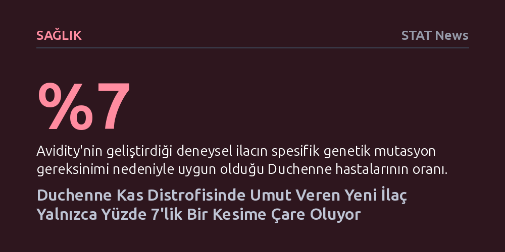

SAGLIK · STAT News · 2026-10-07
Avidity Biosciences'ın geliştirdiği deneysel ekzon atlama ilacı Duchenne kas distrofisinin ilerleyişini durdursa da mutasyona özgü yapısı nedeniyle hastaların yalnızca yüzde 7'sine uygulanabiliyor. Genel ekzon atlama stratejileri hastaların yüzde 70'ine potansiyel sunarken mevcut onay süreçleri dar bir azınlıkla sınırlı kalıyor.
Kişiselleştirilmiş genetik tedavilerin ölümcül bir hastalığı durduracak güce ulaşsa bile, mutasyon çeşitliliği yüzünden hastaların ezici çoğunluğunu tedavi kapsamı dışında bırakabildiğini gösteriyor.

Biri San Diego'da diğeri Minnesota'da yaşayan iki çocuk, Yannick ve Brecken, ölümcül ve ilerleyici bir kas erimesi hastalığı olan Duchenne kas distrofisi tanısıyla büyüyor. Ekran başında Roblox ve Minecraft oynarken kurdukları sanal dünyada akranlıklarını sürdürseler de gerçek hayattaki fiziksel durumları son zamanlarda belirgin biçimde birbirinden ayrışıyor.
Çocukların anneleri arasında yapılan telefon görüşmelerinde bu fark giderek daha çarpıcı hale geliyor: 13 yaşındaki Yannick'in kas gücü hastalığın doğal seyri gereği zayıflamaya devam ederken, 12 yaşındaki Brecken deneysel bir tedavi sayesinde beklenmedik şekilde belirgin bir fiziksel iyileşme gösteriyor.
Brecken'in durumundaki dikkat çekici toparlanmanın arkasında, Avidity Biosciences tarafından geliştirilen Del-zota adlı deneysel ilaç yer alıyor. İlaç, hücrenin protein sentezleyen mekanizmasına müdahale ederek Duchenne hastalığına yol açan genetik bölgedeki hatalı ekzonu atlamasını sağlıyor.
Bu yöntem sayesinde kas hücreleri, kas bütünlüğünü korumak için elzem olan distrofin proteininin tam halini üretemese bile işlev görebilen daha kısa bir formunu sentezleyebiliyor. Klinik denemelerde bu yaklaşımın bazı hastalarda kas yıkımını neredeyse tamamen durdurduğu gözlemlendi.
Ekzon atlama mantığı teorik olarak ABD'deki 10.000 ila 15.000 Duchenne hastasının yaklaşık yüzde 70'ine hitap edebilecek bir potansiyel taşıyor. Ancak bu tedaviler her hastanın taşıdığı spesifik mutasyona göre tasarlanmak zorunda olduğundan, Avidity'nin şu anda Amerikan Gıda ve İlaç Dairesi (FDA) incelemesindeki ilacı hastaların sadece yüzde 7'sine, yani yaklaşık 900 kişiye uygulanabiliyor.
Bu durum, genetik tıbbın sunduğu büyük dönüşüm potansiyelini kanıtlarken, aynı zamanda aynı teşhisi alan binlerce ailenin çocukları için tedaviye erişememe gerçeğini ortaya koyuyor. Umut veren yeni nesil biyoteknoloji ilaçları, mutasyon profillerinin darlığı nedeniyle şimdilik yalnızca şanslı küçük bir azınlığın hayatını değiştirebiliyor.